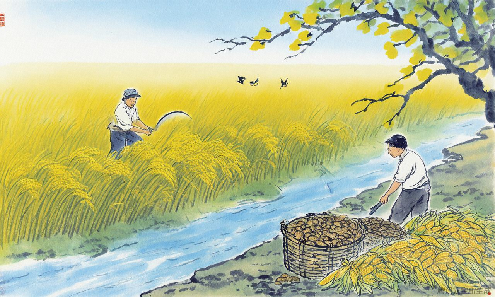
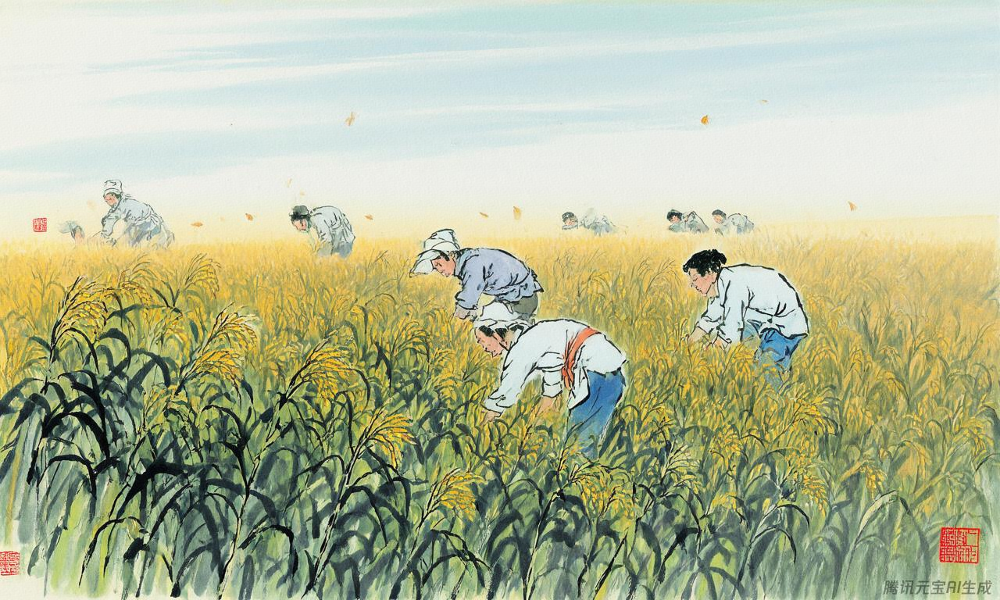
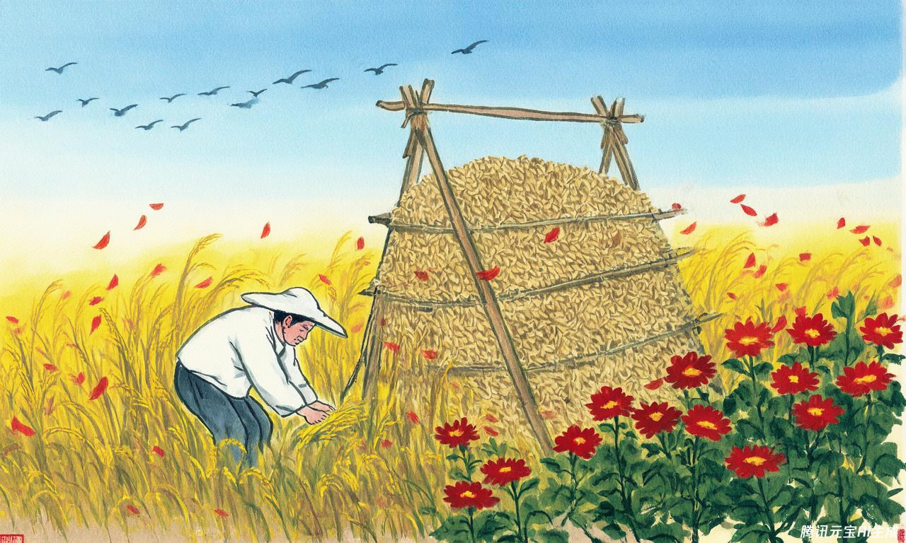

秋季节气
丰收喜悦，风轻云淡，果实累累，秋高气爽。秋季节气象征着收获与感恩。

立秋
立秋
秋季的开始，但天气依旧炎热，有"秋老虎"之说。此时禾谷开始成熟，民间有"啃秋"习俗。

处暑
处暑
"处"有终止、躲藏的意思，表示炎热即将过去。此时暑气逐渐消退，秋高气爽的天气开始出现。
 白露
白露
白露
天气逐渐转凉，清晨的露水增多，在草叶上凝结成晶莹的露珠，呈现出"白露"的景象，故称白露。

秋分
秋分
太阳再次直射赤道，昼夜等长。秋分过后，北半球开始昼短夜长，气温逐日下降。我国古代有"祭月"的传统。
寒露
寒露
气温较白露时更低，露水更多，日带寒意。此时南方秋意渐浓，气爽风凉；北方已呈深秋景象。
霜降
霜降
秋季的最后一个节气，天气渐冷、初霜出现。此时北方大部分地区已经秋收扫尾，南方则是"三秋"大忙季节。